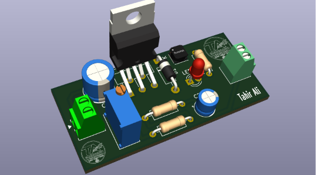
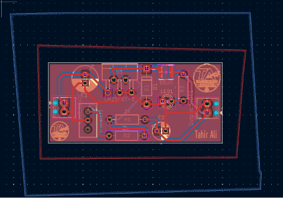
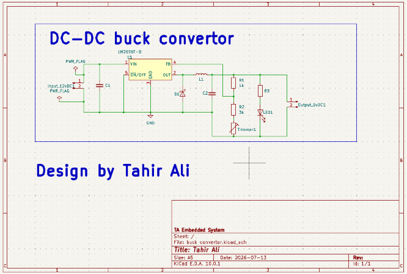

DC-DC Buck Converter PCB
KiCad · Power Electronics




Overview
A manufacturing-ready buck converter board built around the LM2596T-5 step-down regulator, taking a 12V DC input down to a regulated 5V DC output. The design was taken the full distance: schematic capture, footprint placement, copper pour, and a 3D render for final visual sign-off — closing out with a completely clean DRC and ERC pass, zero errors and zero warnings.
A trimmer-adjustable feedback network (R1/R2/R3) allows the output to be tuned, with an onboard status LED and flyback diode protecting the switching node. Power boards are less forgiving than digital layouts — trace widths, thermal relief, and pour clearances all have to be sized for the current they'll actually carry, and this build was routed with that in mind from the first placement pass.
Key Features
- LM2596T-5 switching regulator, 12V DC in → 5V DC out
- Trimmer-adjustable feedback network for output tuning
- Flyback diode and output capacitor filtering on the switching node
- Onboard power/status LED indicator
- Copper pour sized and cleared for power delivery
- 3D visualization for design sign-off
- Zero ERC and zero DRC errors or warnings
- Manufacturing-ready Gerber and BOM output